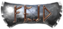

费德
本地离线版支持中英文站内搜索。带 ↗ 的链接需联网；中文采用用户词表，各页来源版本见页脚。


费德是英灵神殿早期测试版本的临时名称。当时由理查德·斯文松独自开发，其YouTube频道可找到多段早期玩法视频。[ 1 ]
Fejd于2018年一月3日开放Windows下载和游玩。[ 2 ]
图片库
- Fejd启动图标。
- Fejd最早预览之一。


参考资料
 | This article is about removed content This page describes content that was present in the game but has since been removed. It may still be present in old saves or be accessible via the developer console. |
Fejd was the temporary name of Valheim during the early alpha version. It was developed by Richard Svensson alone at the time, and various early gameplay videos can be found on his YouTube channel. [1]
Fejd was made available to download and play on Windows on 3 January 2018.[2]
Gallery
-
Launch icon of Fejd.
-
One of the first preview of Fejd.